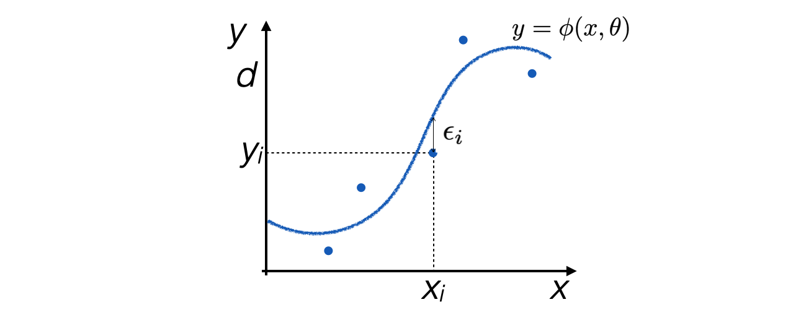
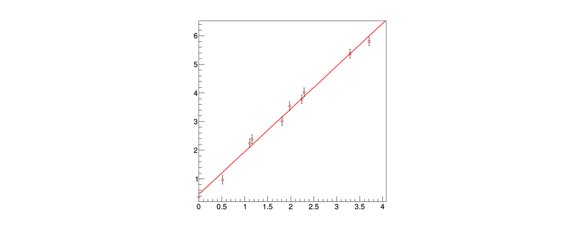

Lezione 11: il metodo dei minimi quadrati in ROOT
Contents
Lezione 11: il metodo dei minimi quadrati in ROOT¶
Indice¶
11.1 Introduzione¶
Il metodo dei minimi quadrati si basa su un principio indipendente rispetto a quello della massima verosimiglianza
Si scelgono i parametri θ che rendono minima la distanza fra il modello ed i dati, secondo una metrica definita dagli scarti quadratici medi

11.1.1 Un esempio immediato¶
Per determinare la media \(\mu\) di un insieme di misure \(x_i\) si può minimizzare la funzione:
\[ Q^2 = \sum_{i=1}^N \left( \frac{x_i-\mu}{\sigma}\right)^2 \]
11.1.2 Il caso y=φ(x)¶
La stessa metrica viene spesso utilizzata per fare regressioni sui dati, chiamata anche fit
Siano date N coppie di misure indipendenti del tipo \((x_i,y_i)\), per le quali:
l’incertezza sul valore \(x_i\) sia nulla o trascurabile
l’incertezza sul valore \(y_i\) sia \(\sigma_i\)
Sia data l’ipotesi che le due variabili \(x_i\) e \(y_i\) siano in relazione fra loro secondo una funzione \(\phi\) tale per cui \(y=\phi(x,\theta)\)
Si definisce la funzione \(Q^2(\theta)\) come:
11.1.3 La determinazione dei parametri θ¶
In questo caso, i parametri \(\theta\) (\(\theta\) può essere un vettore) si determinano trovando il minimo della funzione \(Q^2(\theta)\):
\[ \frac{\partial Q^2(\theta)}{\partial \theta_l} = 0 \]
esistono diverse tecniche numeriche per trovare il minimo della funzione
11.1.4 Le proprietà del metodo¶
Se gli scarti \(\epsilon_i\) di \(y_i\) rispetto a \(\phi(x_i,\theta)\) hanno valore di aspettazione nullo e varianza finita e fissa, cioè non dipendente da \(y\), allora
il metodo dei minimi quadrati è uno stimatore non distorto dei parametri \(\theta\)
ed ha la varianza minima fra tutti gli stimatori non distorti lineari (in \(y\)), indipendentemente dalla distribuzione di probabilità degli scarti
Se gli scarti \(\epsilon_i\) sono distribuiti secondo una distribuzione di probabilità Gaussiana, il minimo della funzione \(Q^2(\theta)\) è distribuito secondo una distribuzione di probabilità \(\chi^2\) con N-k gradi di libertà,
dove N è il numero di coppie \((x_i,y_i)\)* e k il numero di parametri stimati con i minimi quadrati
11.1.5 Il caso lineare¶
Nel caso in cui la funzione g(x) sia lineare nei parametri \(\theta\), le equazioni di minimizzazione possono essere risolte analiticamente
\[ \phi(x,\theta) = \sum_{i=1}^{k}\theta_i h_i(x) \]
Un esempio di funzione lineare è la retta \(\phi(x,\theta) = \theta_1 + \theta_2 x\):
\(h_1(x) = 1\)
\(h_2(x) = x\)
Un altro esempio di funzione lineare è una parabola \(\phi(x,\theta) = \theta_1 + \theta_2 x + \theta_3 x^2\):
\(h_1(x) = 1\)
\(h_2(x) = x\)
\(h_3(x) = x^2\)
11.2 Un esercizio di regressione¶
Utilizzando la generazione di numeri pseudo-casuali, si può simulare la raccolta di N misure indipendenti \((x_i,y_i)\) a partire da un modello iniziale \(y=\phi(x,\theta)\), ad esempio:
double retta (double * x, double * par) { return par[0] + par[1] * x[0] ; }
La generazione di numeri pseudo-casuali sarà utilizzata per distribuire in modo casuale i punti lungo l’asse x e per trovare i valori dei termini \(\epsilon_i\)

11.2.1 Come rappresentare in ROOT i dati¶
ROOTfornisce strumenti che applichino automaticamente il metodo dei minimi quadrati per trovare i paremetri (in gergo tecnico, fare un fit)Coppie di misure come quelle generate sono solitamente rappresentate sotto forma di
TGraphErrorsin ROOT:vector<double> v_x ; // coordinate x vector<double> v_y ; // coordinate y vector<double> v_ex ; // errore sulle coordinate x vector<double> v_ey ; // errore sulle coordinate y //... TGraphErrors g_retta (v_x.size (), &v_x[0], &v_y[0], &v_ex[0], &v_ey[0]) ;
11.2.2 La rappresentazione della funzione modello¶
Per rappresentare la funzione modello, si utilizza un oggetto della classe
TF1:TF1 f_fit ("f_fit", retta, 0., 20., 2) ;
La
TF1è definita a partire dalla funzione diC++chiamataretta;è definita sull’intervallo
(0., 20.)ed ha 2 parametri liberi
11.2.3 La determinazione dei parametri¶
L’operazione di fit viene effettuata con il seguente comando, che invoca il metodo dei minimi quadrati:
TFitResultPtr fit_result = g_retta.Fit (&f_fit, "S") ;
Dopo il fit, la funzione con nome
"f_fit"ha i propri parametri adattati all’istogrammaL’opzione
"S"garantisce che il risultato del fit venga salvato e sia accessibile tramite l’oggettofit_resultdi tipoTFitResultPtrLa funzione
TF1viene automaticamente associata alTGraphe disegnata insieme su unTCanvas, se il metodoTGraph::Drawviene chiamato dopo il fit
11.3 L’analisi del risultato della regressione¶
La funzione di fit viene automaticamente aggiunta alla proprietà del
TGraphe visualizzata quando viene invocato il metodoTGraph::Draw:

11.3.1 La stampa a schermo del risultato¶
L’output a schermo del fit ha la forma seguente:
FCN=10.2772 FROM MIGRAD STATUS=CONVERGED 31 CALLS 32 TOTAL EDM=2.82836e-21 STRATEGY= 1 ERROR MATRIX ACCURATE EXT PARAMETER STEP FIRST NO. NAME VALUE ERROR SIZE DERIVATIVE 1 p0 4.44872e-01 9.13398e-02 7.77790e-05 -5.70963e-10 2 p1 1.49520e+00 4.31502e-02 3.67439e-05 -2.65893e-09
In questo caso, l’algoritmo di minimizzazione utilizzato è
MIGRADL’algoritmo ha avuto successo:
STATUS=CONVERGEDI valori dei singoli parametri e della loro incertezza sono riportati a schermo
Le singole informazioni si possono recuperare anche dentro il codice sorgente
11.3.2 La convergenza del fit¶
Per conoscere il successo dell’algoritmo numerico, si utilizza il metodo
TFitResult::IsValid (), che deve esseretruein caso di successo, oppure il metodoTFitResult::Status (), che deve essere0in caso di successocout << "primo feedback sul risultato del fit: " << fit_result->IsValid () << endl ; cout << "primo feedback sul risultato del fit: " << fit_result->Status () << endl ;
La classe
TFitResultPtrsi comporta come un puntatore ad oggetti di tipoTFitResult
11.3.3 Il valore dei parametri e la loro incertezza¶
Il valore dei parametri e della loro incertezza possono essere ottenuti dalla funzione di fit:
cout << "termine noto : " << f_fit.GetParameter (0) << "\t+- " << f_fit.GetParError (0) << endl ; cout << "pendenza : " << f_fit.GetParameter (1) << "\t+- " << f_fit.GetParError (1) << endl ;
11.3.4 La matrice di covarianza dei parametri risultanti¶
La matrice di covarianza e di correlazione dei parametri risultati può essere stampata a schermo:
fit_result->PrintCovMatrix (cout) ;
I singoli valori sono accessibili tramite un oggetto di tipo
TMatrixDSym(una matrice simmetrica), che si ottiene sempre dall’oggettofit_result:TMatrixDSym cov = fit_result->GetCovarianceMatrix () ; for (int i = 0; i < cov.GetNrows () ; ++i) { for (int j = 0; j < cov.GetNcols () ; ++j) { cout << cov(i,j) << "\t" ; } cout << "\n"; }
In alternativa, si può accedere direttamente ai singoli elementi della matrice di covarianza con il metodo
TFitResult::CovMatrix:cout << "\nmatrice di covarianza del risultato\n\n:" ; cout << "\t " << fit_result->CovMatrix (0,0) ; cout << "\t " << fit_result->CovMatrix (1,0) << "\n" ; cout << "\t " << fit_result->CovMatrix (0,1) ; cout << "\t " << fit_result->CovMatrix (1,1) << "\n" ;
11.4 la sigma delle misure ed il metodo dei minimi quadrati¶
Nel caso in cui le variabili casuali \(\epsilon_i\) abbiano distribuzione di densità di probabilità Gaussiana, il valore del \(Q^2\) associato al fit è distribuito secondo una distribuzione del \(\chi^2\) con un numero di gradi di libertà pari al numero di gradi di libertà del fit
il numero di gradi di libertà del fit è uguale al numero di punti meno il numero di parametri stimati
Questa proprietà del metodo dei minimi quadrati permette, assumendo che le variabili casuali \(\epsilon_i\) siano gaussiane, di stimare le incertezze sui valori \(y_i\)